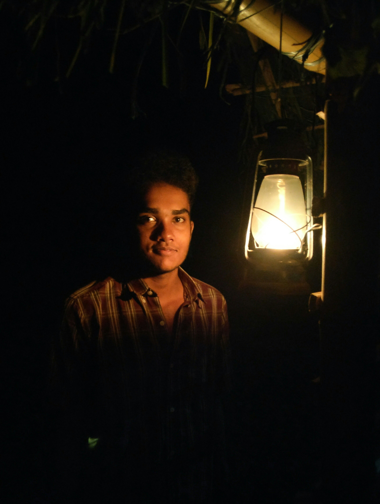

SHAJU GEORGE SAMUEL
Mobile : 8592993862
Email : shajugeorge45@gmail.com
OBJECTIVE :
To obtain a creative and challenging position in an organization that gives me an opportunity for Self- improvement and leadership, while contributing to the symbolic growth of the organization with my technical, innovative and logical skills.
PROFILE SNAPSHOT :
- A career focused individual with B.Tech in Electronics & Communication Engineering.
- Ability to work efficiently on HDL like Verilog, VHDL.
- Excellent with Python.
- Basic knowledge in C++, C, Embedded C.
- Good at Simulation tool like ModelSim, NClaunch
- Strong knowledge on FPGA tools like Vivado HLD 2019.1, Quartus Prime 2018.1.
- Good with Cadence virtuoso, Cadence innovus.
- Done Physical verification tests such as DRC, LVS, ASSURA.
- Basic knowledge in System Verilog and Verification.
- Good with Cadence Allegro and PCB Editor.
- Strong knowledge on basic protocols like SPI, I2C and UART.
- Basic knowledge in automation software like PSpice, Proteus, MATLAB.
- Hands on experience in using of logic analyzers, DSOs, signal generators for testing and debugging.
ACADEMIC DETAILS :
| Course/Degree |
Specialization |
College/School |
Year of Passing |
Grade |
| PG DIPLOMA |
VLSI AND EMBEDDED DESIGN |
NATIONAL INSTITUTE OF ELECTRONICS AND INFORMATION TECHNOLOGY |
2020 |
80 |
| B TECH |
ELECTRONICS AND COMMUNICATION |
COLLEGE OF ENGINEERING ADOOR |
2019 |
7.6 |
| HSE |
SCIENCE |
RVSM HSS PRAYAR |
2015 |
93 |
| 10th |
SSLC |
CMS HS PUTHUPPALLY |
2013 |
96 |